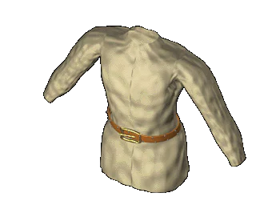

 |
Одежда |
| Славяне Древней Руси
одевались в платья из льняного или конопляного
полотна и шерсти, использовали и такие шерстяные
ткани как сукно, суремяга, опона и власяница.
Большинство славянских князей и богатой знати
имели шелковые одежды. Основными цветами были
белый и серый, но в XII веке ткани уже начали
окрашивать. Широко были распространены меха -
куницы, соболя, белки, лисицы и горностая, выдры и
бобра. Для изготовления одежды использовали и
шкуры - в основном баранов, волков и медведей. Мужская одежда почти всегда состояла из рубахи, штанов и надеваемого при необходимости поверх этого плаща или кафтана. Рубахи представляли собой прямую одежду туникообразного покроя с длинными прямыми рукавами. Рукав у запястья стягивался широкой тесьмой. Посредине груди рубаха имела широкую вышитую вставку, сама рубаха подпоясывалась. Узкие длинные штаны доходили до щиколоток, у славян они назывались ноговицами. Штаны поддерживались на бедрах бечевкой. Поверх этих легких одеяний надевались верхние одежды: жупан, корзно, сукня и кожух. Головной убор славян -- шапка. Мягкие сферические шапки с меховым околышком были важнейшей княжеской регалией. Пояса у славян были матерчатыми и кожанными, с пряжкой, наборными бляшками и наконечниками. Славянские рубахи и верхние одежды завязывались тесемкой, но встречалась и одежда на пуговицах -- костяных и деревянных. Основным видом обуви в городе были башмаки, туфли и полусапожки из кожи. Сельское население использовало преимущественно лапти и поршни. Одежда женщин также состояла из рубашки, которая отличалась от мужской большей длиной и более нарядными украшениями -- вышивкой или узорным тканьем. Женщины носили жупаны, корзно, сукни и кожухи, а в целом женский костюм отличался от мужского головным убором и украшениями. Замужние женщины обязательно носили сложносоставные головные уборы. Составными частями женских уборов были серебрянные пластины с завитком на конце -- налобные венчаки, и орнаментированные пластины, воспроизводящие форму человеческого уха -- наушники. Весьма характерным украшением были височные кольца, которые носили на висках. Широко распространены были и шейные ожерелья из бус разного цвета. |
Текст и
иллюстрации (c) 1997 Snowball Interactive Entertainment, Inc. |